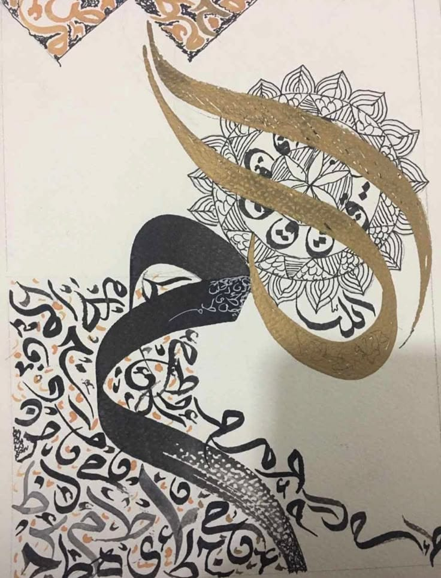
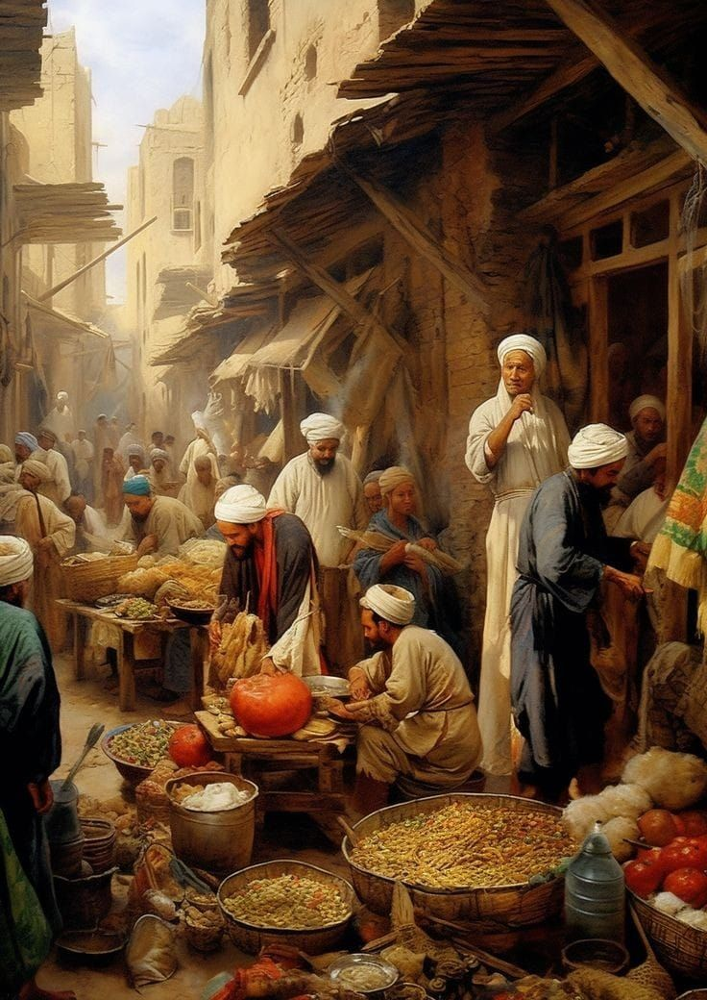
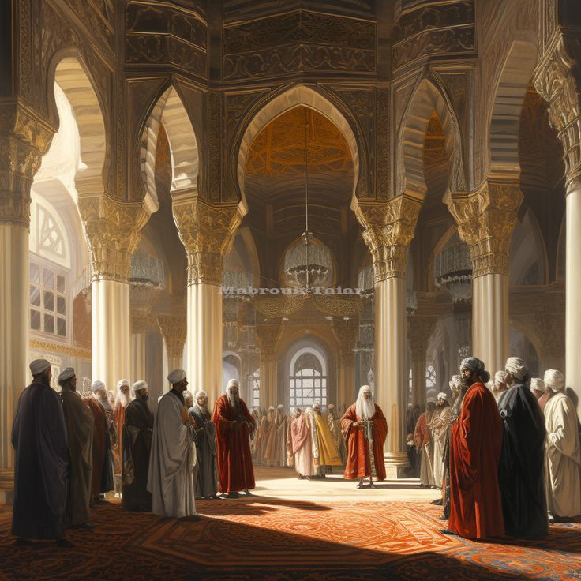

Islamic culture was rich and influential, focusing on knowledge, science, and education. Scholars contributed to fields like medicine, mathematics, and astronomy. It was also known for beautiful art, architecture, and active trade.
Islamic Arts
Islamic art is famous for its beautiful decoration and elegant calligraphy. Islamic decoration (ornamentation) often includes geometric patterns, floral designs, and repeated shapes that show harmony and balance .

Daily Life in Islamic Era
Daily life in the Islamic era was active and well-organized, with markets playing a central role. People gathered in bustling souks to buy and sell goods, including food, textiles, and crafts. These markets were not only for trade but also for social interaction and cultural exchange.

Scientific Culture
Scientific culture in the Islamic era focused strongly on learning and education. Scholars studied subjects like medicine, mathematics, and astronomy, making important discoveries. Schools, libraries, and study circles helped spread knowledge and encouraged learning.
Islamic Architecture
Islamic architecture is known for its beauty, precision, and unique artistic style. It features large mosques, domes, minarets, and intricate geometric decorations. Builders used patterns, calligraphy, and symmetry to create stunning designs that reflect Islamic culture and faith.
